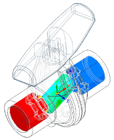
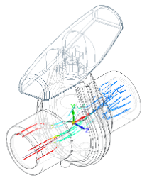
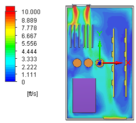
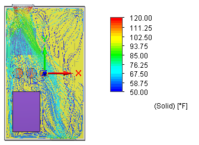
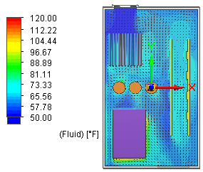

Using flow analysis with structural analysis
In the mechanical design of a product, flow analysis is used to determine how your product interacts with gas or liquid fluid flows in its environment or in its operation. In Solid Edge Simulation, finite element analysis is used primarily to determine the structural integrity of your design.
Flow analysis in Solid Edge
Simcenter FLOEFD for Solid Edge is the fully integrated FloEFD computational fluid dynamics (CFD) software for calculating gas or liquid fluid flows inside and outside Solid Edge models, as well as heat transfer to, from, between, and in these models due to convection, radiation, and conduction.
Flow analysis is used in many industries and for various applications, where design optimization and performance analysis are extremely important, such as valves and regulators, hydraulic and pneumatic components, heat exchangers, automotive parts, electronics and many others.
Flow analysis used to analyze fluid pressure distribution and trajectory through control valves.


Flow analysis used to analyze temperature velocity and heat conduction within electronics devices.



Relationship of flow analysis to Solid Edge Simulation
Similar to Solid Edge Simulation finite element analysis, you use the Simcenter FLOEFD for Solid Edge analysis interface to:
-
Define a project.
-
Specify inputs for the calculation, including:
-
Fluid material properties
-
Nodes and elements representing the fluid volume and interacting surfaces
-
Boundary conditions that mimic the movement of the fluid.
-
-
Run, monitor, and control the calculation.
-
Review the graphs and plots obtained in the results.
-
Flow analysis calculates properties such as velocity, pressure, density, and temperature. You can apply the fluid pressure and temperature results as boundary conditions (external loads) to a finite element analysis of your design.
For more information, see Use fluid flow results in a linear static or thermal study.